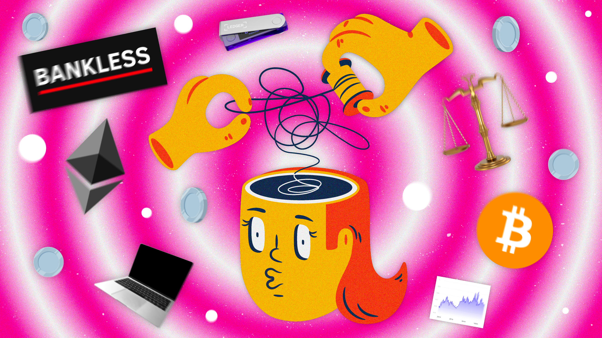
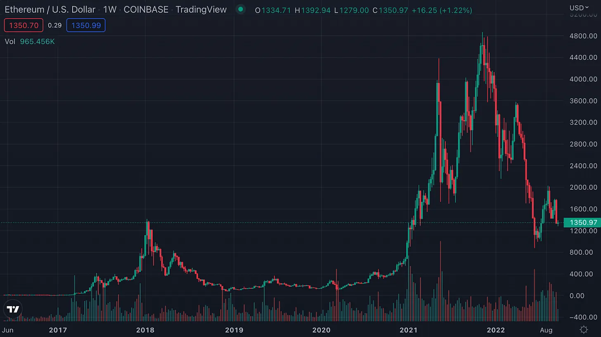
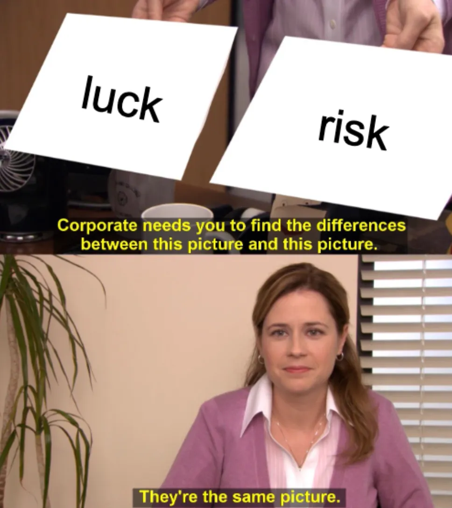
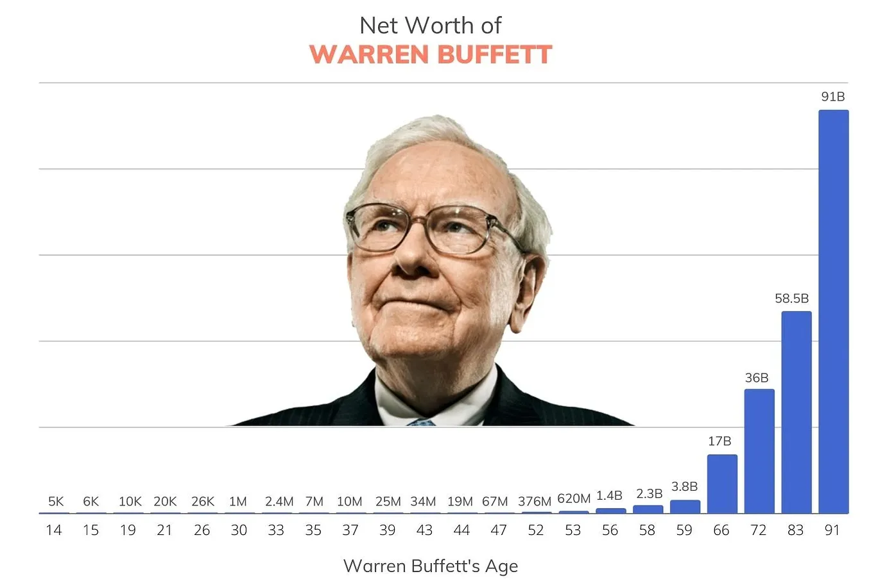

如何破解加密投資十大心裡誤區？
這篇文章出自“Bankless”的 文章

Graphic by Logan Craig
#1 世上沒有免費午餐
世上沒有免費的午餐。任何值得追求的東西都有其附帶的成本。
在加密貨幣領域，追求超額回報的成本是被迫忍受巨大的波動。
加密貨幣也許是唯一的資產類別，投資者可以在幾個月內在公開市場上獲得改變生活的回報。
儘管有這種誘人的上升空間，但由於大多數代幣巨大的價格波動，投資加密貨幣說起來容易，做起來難。為了這些較高的高點，投資者也將忍受較低的低點，並且必須有勇氣承受波動，管理痛苦、焦慮、悲傷、沮喪和失望，這些都是看著他們的投資組合在眨眼間蒸發的結果。

從長遠來看，渡過波動期的加密貨幣投資者往往會隨著時間的推移得到回報。
例如，ETH在7年的歷史中，有8次跌幅超過50%（平均每年超過1次）。追求快速獲利的弱勢投資者早就被淘汰了。
那些認真研究過基本面並有膽識的人今天仍在獲得收益。
#2 - 沒有人是瘋子
我們的個人經歷塑造了我們對世界的看法。 在涉及金錢和投資方式時都是如此。
我們獨特的、個人的金錢體驗會影響我們的消費、管理和投資方式。
因此，沒有明確的“正確”或“錯誤”的投資方式。 每個人都應該以適合自己獨特的風險承受能力、時間範圍和財務目標的方式管理他們的投資組合。
播客上討論的一個例子是模因硬幣。 老手可能會嘲笑新手選擇購買看似沒有基本價值的資產的想法。 但是對加密貨幣感興趣的新人或偶然感興趣的人可能會將這些資產視為可以幫助他們實現財務目標的投機工具。
這些不同的投資者偏好和市場參與者群體（另一個例子是短期交易者與長期投資者）可能會產生不同的意見。
正因為如此，當我們考慮別人的決定時，我們應該少評判，因為市場上的每個人都在玩自己的個性化遊戲。
#3 - 運氣與風險
運氣和風險是同一枚硬幣的兩個方面。

聰明的投資者非常專注於降低風險，並會為此分散和/或對沖他們的投資組合。
然而，運氣對回報也有同樣大的影響。 世界上最成功的人都非常幸運，在正確的時間出現在正確的地點。 例如，比爾蓋茨認為，如果他不是在高中學習計算機，他就不會創立微軟。
這些隨機的運氣往往會扭曲投資者的看法，使他們更容易產生倖存者偏差，導致他們嘗試複製真正無法複製的成功。
為緩解這種情況，摩根建議投資者嘗試尊重他們可以實際效仿的人或品質。
#4 - 貪婪要適度
貪婪是一種地獄般的毒品。
如果保持適度，對更多的渴望並不一定是壞事，因為它會促使人們更加努力地工作並提高生活質量。 但貪婪是不切實際的期望的醜陋下腹部，會導致魯莽的冒險，這是非常危險的，這在加密貨幣中尤其明顯。
例如，在牛市期間，許多市場參與者會因為沒有像他們認為的同行那樣賺錢而自責。在 2021 年，經常聽到加密貨幣投資者對諸如“僅”在其頭寸上賺取 5 倍、以任何指標衡量的出色回報，而不是 10 倍或 20 倍之類的事情感到腹痛是司空見慣的。
正如摩根所指出的，對沖基金 3AC 的聯合創始人 Su Zhu 和 Kyle Davies 很可能在 2020-2021 年牛市期間獲得的利潤可以像國王一樣生活。
相反，他們對更多的渴望最終導致了他們公司的毀滅，使他們在風險越來越大的賭注中承擔了更多的籌碼。
這裡的關鍵是不要將您的收益與在高爾夫球場上吹噓他的一夜財富的幸運者進行比較，而是與您為自己設定的標準和目標進行比較。
摩根建議，為了確保您有足夠的收入，您的期望不應超過您當前的收入。
#5 - 金錢是自由的工具
正如大衛喜歡說的那樣，加密不是為了讓你變得富有——它是為了讓你自由。
積累資產和財富就是哲學家所說的積極自由。 它通過為他們提供對時間的更多控制，擴大了人們對生活的自由范圍。 從本質上講，我們更接近最終狀態，我們可以在早上醒來，自由地度過每一天，隨心所欲。
對時間的控制極為罕見。 正如摩根在描述他與一位富有的基金經理共進晚餐時所指出的那樣，有一種情況是“現金充裕，時間破產”，或者財務狀況良好。
#6 - 複利的力量
投資界常說“複利是世界第八大奇蹟”。
雖然很容易被市場的短期波動分散注意力，但投資者常常忘記，真正出色的低風險回報來自於長期復利。
以沃倫巴菲特為例。 巴菲特以長期考慮他的投資而聞名。 奧馬哈的甲骨文已經積累了 $97.5B 的財富，其中約 96% 的財富是在他 59 歲生日之後積累的。

當然，巴菲特也是一位投資天才，他有做出非常好的賭注的訣竅。 但我們可以看到，巴菲特的大部分財富可以歸因於在市場上花費足夠的時間來獲得大量複合回報。
隨著空間在未來幾十年繼續增長，同樣的原則也可以應用於加密貨幣。
#7 - 獲得併保持富裕
獲得和保持富裕需要相反的心態。
在摩根看來，要想致富，必須樂觀。 這是因為樂觀主義者更願意承擔個人和/或財務風險，逆勢而上，並看到有可能帶來巨額回報的想法、業務或項目的潛力。
然而，為了保持富有，一個人必須保守。 這並不意味著把你的錢藏在床墊下。 但是，當首要任務是保護而不是增長自己的資本時，採用平衡的、更規避風險的心態和投資策略是明智的。
摩根恰當地說——你應該像悲觀主義者一樣存錢，像樂觀主義者一樣投資
#8 - 合理與理性
雖然我們經常努力做出理性的決定，但有時最好做出合理的決定。
換句話說，我們應該嘗試在任何給定的時間為自己做出最好的決定，即使從理論上講，這個決定似乎沒有意義或導致作為投資者的短期利潤最大化。
這方面的一個例子是在一次性投資和美元成本平均 (DCA) 之間進行選擇。 選擇前者似乎是合理的，但你有多大可能計時底部？
對於一些投資者來說，選擇後者可能更合理，以減少他們在投資後價格立即下跌時感到後悔的機會。
儘管這可能會導致短期回報降低，但做出合理而非理性的 DCA 決定並儘量減少遺憾可以避免影響他們的判斷並在長期內犯下相應的錯誤。
合理⚖️ > 理性🧠
#9 - 人的變化
正如價格會隨著時間而變化一樣，人們及其生活偏好也會隨著時間而變化。
摩根認為，人們低估了他們在一生中會發生多大的變化，而這反過來又會對一個人的財務目標產生多大的影響。
例如，一名剛畢業的大學畢業生可能認為將他的整個投資組合保持在資產類別中是有意義的，因為他相信加密貨幣的長期上行空間以及隨著時間的推移用他們的未來收入彌補損失的潛力。
但是，假設這名大學生結婚並有了孩子。當你 20 多歲的時候，住在一個漂亮的豪宅里，有一個大游泳池和最新的汽車是你想要的。現在你已經 30 多歲了，帶著孩子，你意識到你比你曾經想要的更接近生活的滿足。
由於他不斷變化的環境，他可能會開始優先考慮財務穩定性而不是最大化潛在回報。他可能會選擇在加密貨幣之外進行多元化投資，並轉向波動性較小的資產，例如房地產。
應對變革衝擊的最佳方式是在規劃自己的財務時避免極端情況——尋求將變革影響降至最低的投資者應著眼於在冒險和保守主義之間找到平衡。
#10 - 悲觀主義
人們經常被悲觀主義所吸引，因為它聽起來很聰明、紮實且現實。正如摩根所說，悲觀主義者聽起來像是試圖通過指出缺陷和警告潛在風險來幫助你。
這種悲觀情緒的部分原因是好消息和壞消息的性質。當壞事發生時更容易注意到，因為它們通常發生在眨眼之間，而好消息的好處需要時間才能發揮出來。
Terra 就是一個例子，它在短短幾天內內爆並消滅了數百億人。加密貨幣悲觀主義者可能會將此作為加密貨幣作為一個整體失敗的原因。
然而，在這樣做的過程中，悲觀主義者會忽略這樣一個事實，即在過去的 14 年中，加密貨幣仍然設法創建了一個主權、強大和有彈性的萬億美元生態系統，該生態系統能夠承受極端事件，例如 11 位數的崩盤無需任何政府乾預的穩定幣。
此外，樂觀主義者會指出，Terra 是加密貨幣在其短暫的歷史中設法克服的一長串看似存在的危機中的另一個。
樂觀主義者會強調，儘管混亂不堪，但我們仍然屹立不倒。
我們還在這裡，我們仍在建設中。
所以，是的，悲觀情緒可能會出售。但從長遠來看，保持樂觀通常是值得的。